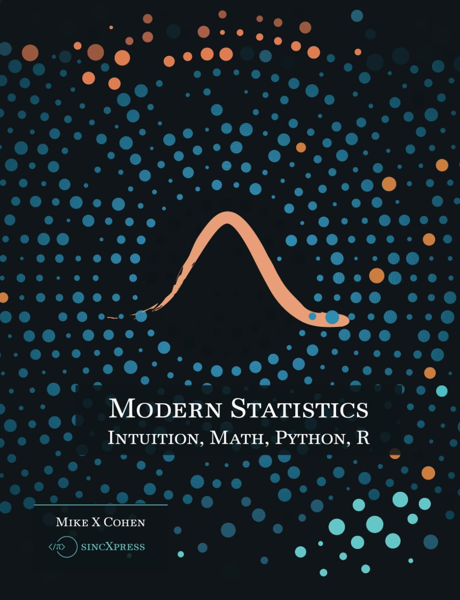
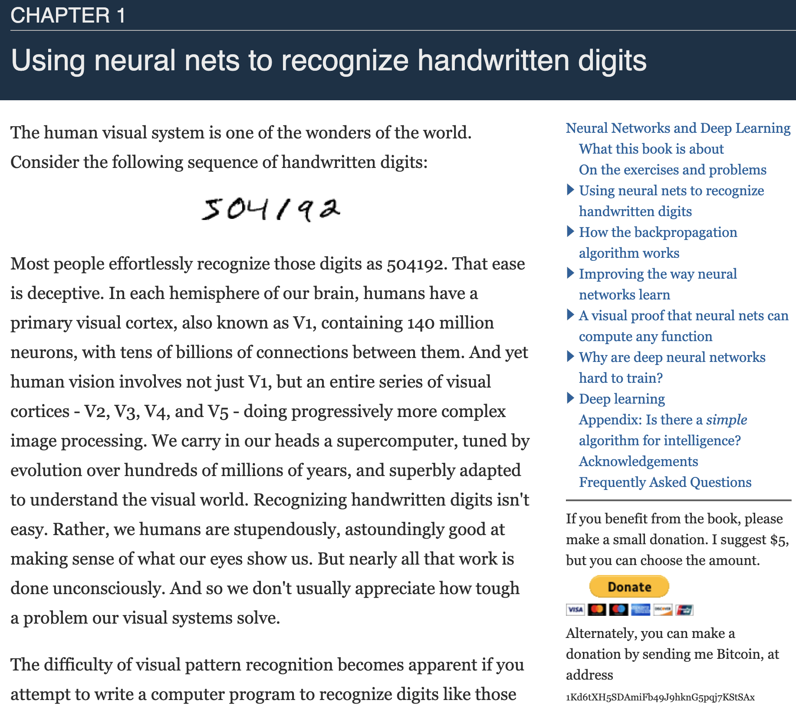

Statistics and Machine Learning
home
I’m teaching myself statistics and machine learning, and the best way to truly understand is to use the new tools I’ve acquired. This is what this website is for. It is mainly a reference guide for my future self.
books
These are the books that I’ve read and recommend.
Modern Statistics: Intuition, Math, Python, R
by Mike X Cohen

This is a really approachable book, the author has a very nice conversational style, and I enjoyed it a lot. Highly recommended
Data-Driven Science and Engineering: Machine Learning, Dynamical Systems, and Control
by Steven L. Brunton, J. Nathan Kutz
The whole book is available in this website.
This is the sort of books that is suitable for those who already know the subject. I would not recommend it as a first read. In any case, some chapters gave me new intuition on the subject. I do highly recommend Steve Brunton’s youtube channel, it’s fantastic.
Neural Networks and Deep Learning
by Michael Nielsen

This is an online book, freely available here. It can be tiring to read a whole book on a computer screen, so you can find Anton Vladyka’s LaTeX rendition of this book in his GitHub repository. I wanted to read the pdf in my tiny kindle reader, so I recompiled Anton’s LaTeX code to make it fit the screen, and on the way changed the font, and corrected typos here and there. Overleaf project. Download pdf.
Nielsen writes very well, I really enjoyed this book. The part on backprogation is a bit confusing, I would recommend watching 3b1b’s youtube video on that.
Introduction to Environmental Data Science
by William W. Hsieh
This book’s best quality is that it covers a bunch of topics, methods, techniques. It is not a good book to learn concepts for the first time, it’s more useful as a menu of what exists, and maybe a brief reminder of topics you studied in the past but forgot. The “environmental” aspect is completely incidental, in my opinion. Hsieh brings examples from the Environment, but you don’t need to have a background in environmental science to be able to read it.
websites
Dr. Roi Yehoshua’s tutorials
Really good tutorials, you should check this out:
https://towardsdatascience.com/author/roiyeho/
It seems the he wrote a book, I haven’t read it, but should be good:
Machine Learning Foundations, Volume 1: Supervised Learning